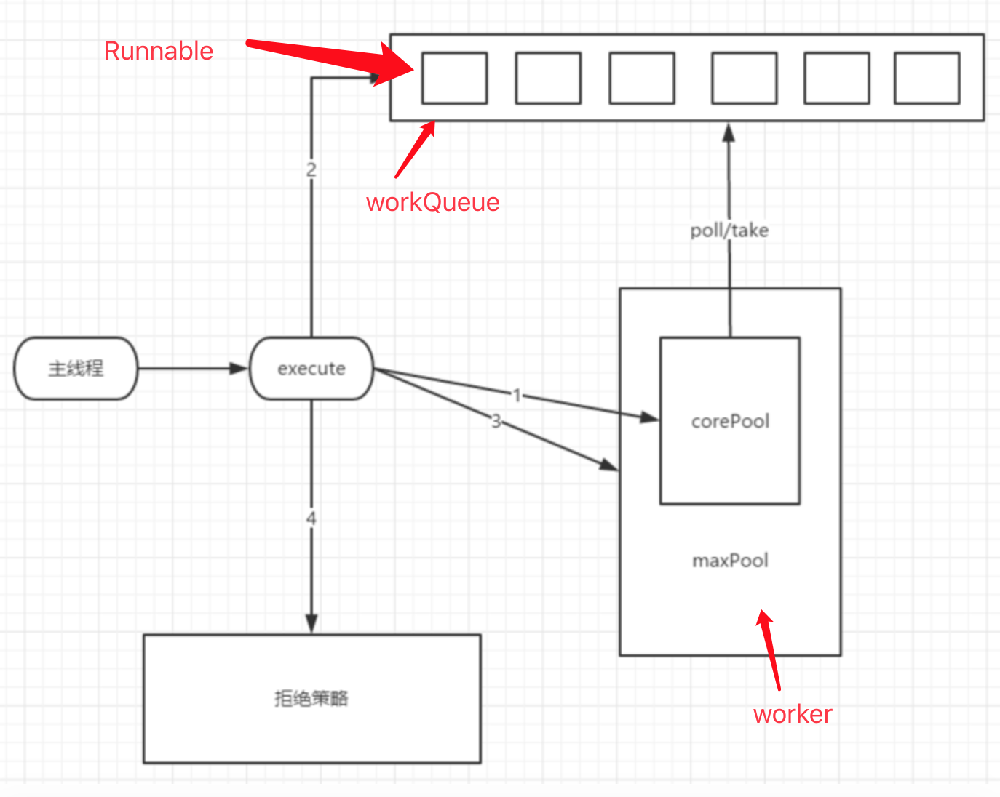
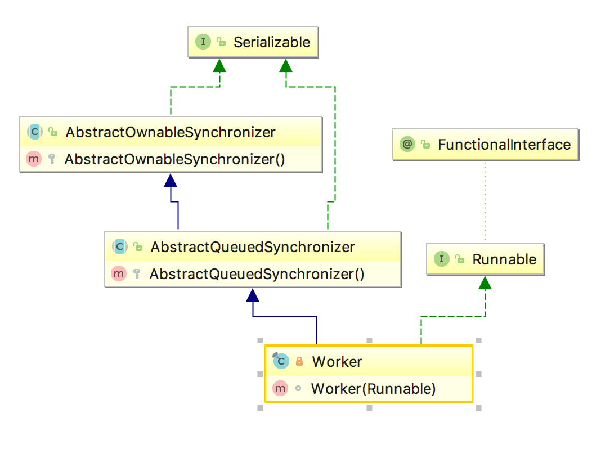
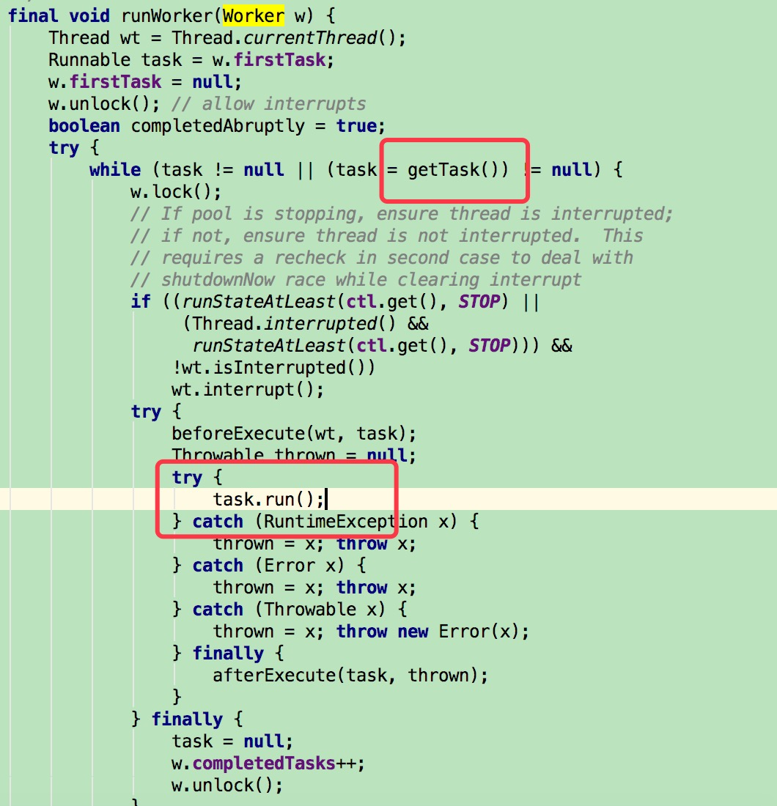
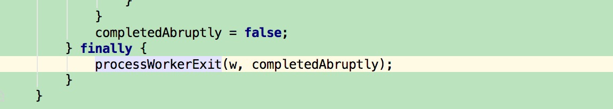
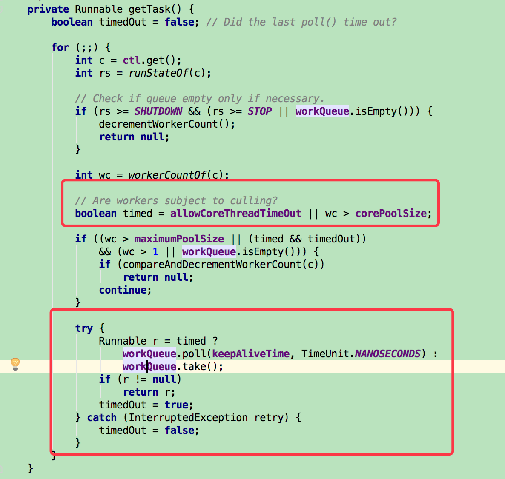
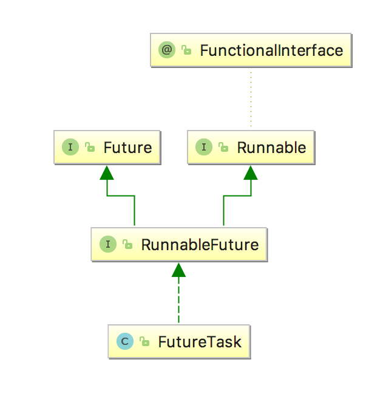
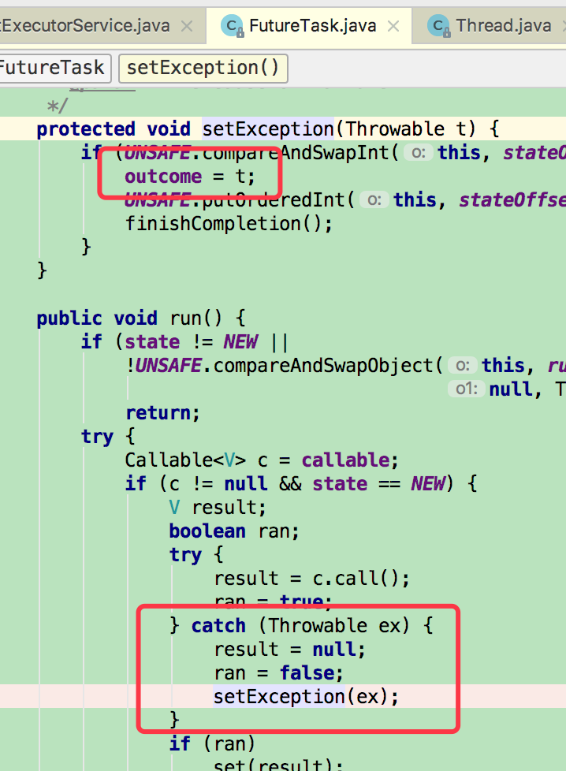
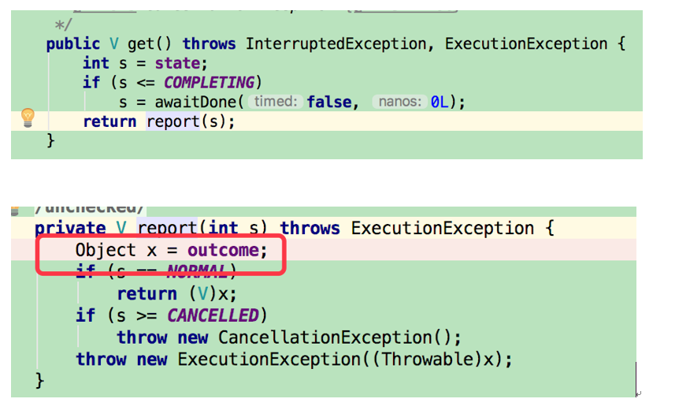
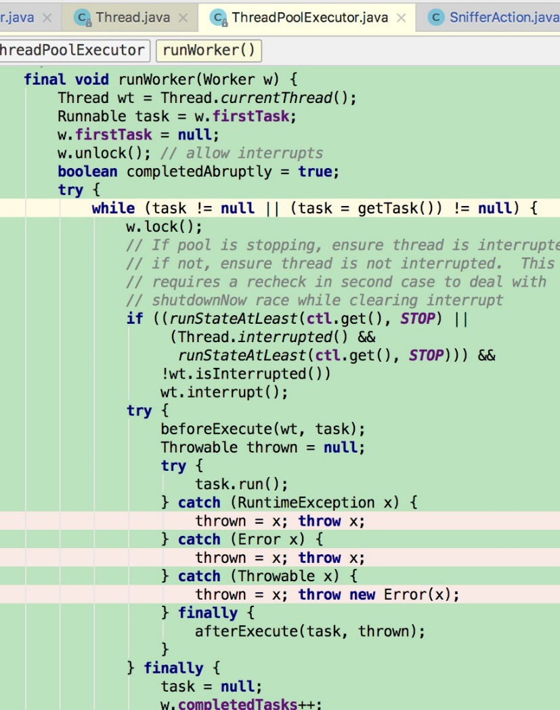
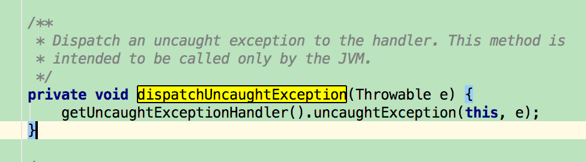

概述
此次源码解析，主要实现以下目标：
-
基本使用
-
基本源码结构查看
-
submit和execute的区别
源码解析
基本使用
引用网络上对线程池的优点描述：
-
降低资源消耗。通过重复利用已创建的线程降低线程创建和销毁造成的消耗。
-
提高响应速度。当任务到达时，任务可以不需要的等到线程创建就能立即执行。
-
提高线程的可管理性。线程是稀缺资源，如果无限制的创建，不仅会消耗系统资源，还会降低系统的稳定性，使用线程池可以进行统一的分配，调优和监控。
当开发者使用线程池时，就基本知道线程池的好处了。通常为了为了能区分出代线程池的用处，最好对业务进行归类，线程归类，方便统一操作。指定线程池的名称，并设定当线程发生未捕获异常时的处理（只对execute提交的task有用）。
例如：
+———————————————————————-+ | private static class SnifferPoolExecutor extends | | ThreadPoolExecutor { | | | | SnifferPoolExecutor(int corePoolSize, int maximumPoolSize, | | | | long keepAliveTime, | | | | TimeUnit unit, | | | | BlockingQueue<Runnable\ workQueue) { | | | | super(corePoolSize, maximumPoolSize, keepAliveTime, unit, | | workQueue, | | | | new | | Bas | | icThreadFactory.Builder().namingPattern("数据抓取工作线程-%d") | | | | .uncaughtExceptionHandler(new UncaughtExceptionHandler() { | | | | \@Override | | | | public void uncaughtException(Thread t, Throwable e) { | | | | log.warn("线程[" + t.getName() + | | "]发生未捕获异常", e); | | | | } | | | | }).build()); | | | | } | | | | } | +———————————————————————-+
参数描述
+———————————————————————-+ | public ThreadPoolExecutor(int corePoolSize, | | | | int maximumPoolSize, | | | | long keepAliveTime, | | | | TimeUnit unit, | | | | BlockingQueue<Runnable\ workQueue, | | | | ThreadFactory threadFactory, | | | | RejectedExecutionHandler handler) { | | | | if (corePoolSize < 0 || | | | | maximumPoolSize <= 0 || | | | | maximumPoolSize < corePoolSize || | | | | keepAliveTime < 0) | | | | throw new IllegalArgumentException(); | | | | if (workQueue == null || threadFactory == null || | | handler == null) | | | | throw new NullPointerException(); | | | | this.corePoolSize = corePoolSize; | | | | this.maximumPoolSize = maximumPoolSize; | | | | this.workQueue = workQueue; | | | | this.keepAliveTime = unit.toNanos(keepAliveTime); | | | | this.threadFactory = threadFactory; | | | | this.handler = handler; | | | | } | +———————————————————————-+
- corePoolSize
核心线程数量，用来描述worker的数量。worker是线程池真正能够执行的线程。提交的Runnable就像个工单，submit或execute后，worker是真正执行Runnable的线程。
- maximumPoolSize
最大线程数量，用来描述worker的最大数量。
- keepAliveTime
是指线程池worker所允许的空闲时间。当线程池中的worker数量大于corePoolSize的时候，如果这时没有新的Runnable提交，核心线程外的worker不会立即销毁，而是会等待，直到等待的时间超过keepAliveTime
- unit
时间的单位
- workQueue
Runnable提交的队列。这里需要注意的是，这个队列是用来存放Runnable任务的，这个参数和corePoolSize用来决定何时执行任务。提交的Runnable是否被立即执行，判断顺序为：先判断是否小于corePoolSize，如果当前worker数小于CorePoolSize，那就启动worker执行任务，如果大于了corePoolSize，那就先放workQueue，如何workQueue也放不下了，那就再启动worker立即执行当前的Runnable。举个例子，当corePoolSize为2，workQueue为10，当提交了2个Runnable时，将会启动两个worker工作，当提交了3-12时，都还是只有2个worker，只有当提交到13个时，队列装不下了，就在启动一个worker进行执行Runnable。
- threadFactory
用来创建新线程。默认使用Executors.defaultThreadFactory() 来创建线程。建议自己实现该类，提供业务相应的名称，并在newThread方法中实现自己业务的Thread，并实现setUncaughtExceptionHandler方法设定线程发生未捕获异常后的处理，例如打日志，该方法对submit无效。
- handler
表示线程池的饱和策略。如果阻塞队列满了并且没有空闲的线程，这时如果继续提交任务，就需要采取一种策略处理该任务。
线程池提供了4种策略：
-
AbortPolicy：直接抛出异常，这是默认策略；
-
CallerRunsPolicy：用调用者所在的线程来执行任务；
-
DiscardOldestPolicy：丢弃阻塞队列中靠最前的任务，并执行当前任务；
-
DiscardPolicy：直接丢弃任务
{width=”5.768055555555556in” height=”4.600694444444445in”}
worker的概念
在线程池中，池里装的就是worker，他也是个线程实现了Runnable接口，他会从workQueue里面去获得Runnable，然后执行。并继承AbstractQueuedSynchronizer，以完成锁的相关操作。
{width=”5.768055555555556in” height=”4.309722222222222in”}
+—————————————————–+ | private final class Worker | | | | extends AbstractQueuedSynchronizer | | | | implements Runnable | | | | { | | | | //省略 | | | | Worker(Runnable firstTask) { | | | | setState(-1); // inhibit interrupts until runWorker | | | | this.firstTask = firstTask; | | | | this.thread = getThreadFactory().newThread(this); | | | | } | | | | public void run() { | | | | //执行ThreadPoolExecutor的runWorker | | | | runWorker(this); | | | | } | | | | //省略 | | | | } | +—————————————————–+
当Worker启动后，会执行ThreadPoolExecutor的runWorker方法，通过代码可以看到，worker启动后就会循环通过getTask从workQueue中获得Runnable来执行。除非获得不到Runnable了，就跳出循环，这个worker的run也就即将走完，完成任务了，在最后的processWorkerExit方法，用来判断是否还需要再addWorker重新启动woker，以满足corePoolSize，这里应该只是一个再次确认的操作，因为在getTask里有相应的处理。{width=”5.768055555555556in” height=”5.987936351706037in”}
{width=”5.768055555555556in” height=”1.0313713910761155in”}
{width=”5.768055555555556in” height=”5.476388888888889in”}
timed用于判断对满足corePoolSize以内worker的策略，allowCoreThreadTimeOut意思为是否允许核心worker timeout，默认为false，而wc为当前worker的数量。通过以上的红框就能知道，当worker的数量没有超过corePoolSize是不启用超市策略的，也就是使用workQueue的take进行阻塞，否则就等待keepAliveTime的时间，返回null时，就是上面的runWorker方法的处理了。
submit和execute的区别
+———————————————————————-+ | public Future<?\ submit(Runnable task) { | | | | if (task == null) throw new NullPointerException(); | | | | RunnableFuture<Void\ ftask = newTaskFor(task, null); | | | | execute(ftask); | | | | return ftask; | | | | } | | | | public void execute(Runnable command) { | | | | if (command == null) | | | | throw new NullPointerException(); | | | | int c = ctl.get(); | | | | //判断当前worker大小是否超过了核心大小 | | | | if (workerCountOf(c) < corePoolSize) { | | | | //没有超过就增加worker | | | | if (addWorker(command, true)) | | | | return; | | | | c = ctl.get(); | | | | } | | | | //当线程池在运行并且添加到队列成功 | | | | if (isRunning(c) && workQueue.offer(command)) { | | | | int recheck = ctl.get(); | | | | //再次确认，如果添加成功后，线 | | 程池不是运行中了，就删除刚刚添加的Runnable，并执行相应策略。否则wor | | ker大小为0了，就启动一个worker，通过getTask阻塞着等待workQueue的任务 | | | | if (! isRunning(recheck) && remove(command)) | | | | reject(command); | | | | else if (workerCountOf(recheck) == 0) | | | | addWorker(null, false); | | | | } | | | | //如 | | 果添加到队列失败，就直接启动worker执行任务，如果失败了则执行拒绝操作 | | | | else if (!addWorker(command, false)) | | | | reject(command); | | | | } | +———————————————————————-+
sumbit同样也会执行execute方法，只不过在之前将Runnable在封装了一层FutureTask，同样它也实现了Runnable接口。所以当submit中的execute方法执行的其实就是FutureTask了。
{width=”2.8750503062117234in” height=”2.9927384076990378in”}
+———————————————————————-+ | public Future<?\ submit(Runnable task) { | | | | if (task == null) throw new NullPointerException(); | | | | RunnableFuture<Void\ ftask = newTaskFor(task, null); | | | | execute(ftask); | | | | return ftask; | | | | } | | | | protected <T\ RunnableFuture<T\ newTaskFor(Runnable | | runnable, T value) { | | | | return new FutureTask<T(runnable, value); | | | | } | | | | public FutureTask(Runnable runnable, V result) { | | | | this.callable = Executors.callable(runnable, result); | | | | this.state = NEW; // ensure visibility of callable | | | | } | | | | public void run() { | | | | //省略 | | | | try { | | | | //这里就是Runnable的run方法 | | | | result = c.call(); | | | | ran = true; | | | | } catch (Throwable ex) { | | | | result = null; | | | | ran = false; | | | | //封装异常 | | | | setException(ex); | | | | } | | | | if (ran) | | | | set(result); | | | | //省略 | | | | } | +———————————————————————-+
执行流程为worker的run --\ FutureTask 的run --\ 业务的run。
并且当FutureTask发生异常后，并不会将异常执行抛出，而是封装起来，而对于worker的run，Throwable就不可兼了，当调用get方法时才能捕获到Exception。这也就是为什么当使用submit方法提交Runnable时，setUncaughtExceptionHandler不能捕获到异常。
{width=”2.234303368328959in” height=”3.0434930008748906in”}{width=”3.491428258967629in” height=”2.07259186351706in”}
{width=”3.757515310586177in” height=”4.760204505686789in”}
当调用worker的run方法时，执行的业务的run报出RuntimeException、Error、Throwable时，会直接抛出。而异常将会由jvm的底层代码调用Thread的dispatchUncaughtException这个方法，执行线程未捕获异常后的处理。http://a-ray-of-sunshine.github.io/2016/08/22/%E7%BA%BF%E7%A8%8B-%E5%88%9B%E5%BB%BA%E5%92%8C%E5%90%AF%E5%8A%A8/#Thread-UncaughtExceptionHandler
{width=”4.45918416447944in” height=”1.2337882764654418in”}